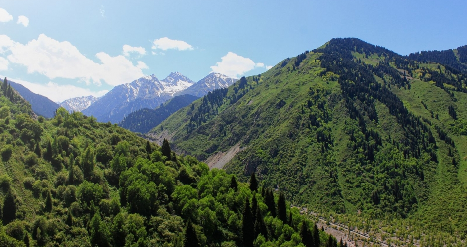

The best places in Kazakhstan
CHARYN CANYON

Charyn Canyon is part of the Charyn National Park and stretches 154km along the Charyn River, one of the deepest rivers of the Northern Tien Shan mountains. Some of the cliffs resemble fantastical figures, the reason why some parts of the canyon are also called the Valley of Castles, the Devil’s Gorge and the Ghosts Gorge.
Buy ticketISSYK LAKE

The lake was created by an ancient natural landslide damming the valley and then was covered up by another natural landslide destroying it in 1963. Eventually, man stepped in and created the lake again. The mountain views, ristine nature, and Soviet relics in the area make this lake a can’t miss in Kazakhstan.
Buy ticketILE-ALATAU NATIONAL PARK

The Ile-Alatau National Park is a beautiful national park located in the Trans-Ile Alatau mountains south of Almaty. The park was created in 1966 and is home to approximately 300 species of wildlife, including the snow leopard.
Buy ticket